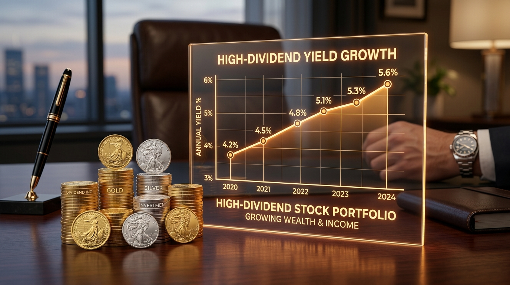

월배당 ETF & 고배당주 포트폴리오로 월 100만원 패시브 인컴 파이프라인 만들기

1. 핵심 이슈 브리핑: 기업 밸류업 프로그램과 주주환원 혁신
정부의 자본시장 선진화 및 코리아 디스카운트 해소 정책에 힘입어 “월배당 ETF & 고배당주 포트폴리오로 월 100만원 패시브 인컴 파이프라인 만들기” 이슈에 국내외 기관 및 장기 펀드 자금이 대거 유입되고 있습니다.
월배당 ETF & 고배당주 포트폴리오로 월 100만원 패시브 인컴 파이프라인 만들기에 대한 심층 팩트체크, 금융 시장 파급 효과, 핵심 데이터 지표 및 실전 투자 전략을 분석합니다.
기업 밸류업 프로그램의 2단계 세제 개편안(배당소득 분리과세 및 자사주 소각 법인세 감면)이 가시화되면서, 국내 상장사들의 만성적 저평가 원인으로 지목되던 취약한 거버넌스와 낮은 주주환원율이 구조적으로 개선되고 있습니다.
청산가치에도 미치지 못하던 금융지주, 보험, 증권, 순수 지주사, 전통 제조업 우량주들의 밸류에이션 정상화가 본격화되었습니다.
대형 금융지주와 지주사들이 연이어 자사주 매입 및 전량 소각 공시를 발표하며 주당순이익(EPS)과 주당순자산(BPS)이 동반 상승하고 있습니다.
결산 배당 중심에서 분기 균등 배당으로 전환되며 투자자들에게 연중 안정적인 현금흐름을 제공하는 배당 매력이 극대화되었습니다.
특히 글로벌 패시브 자금과 국부펀드들이 코리아 밸류업 지수(Value-up Index) 편입 종목을 중심으로 기계적인 매수세를 유입시키고 있어, 실질적인 주주환원 의지를 보인 기업들의 주가 하방 지지력이 매우 강력하게 형성되고 있습니다.
2. 펀더멘털 지표(PER·PBR·ROE) 및 외국인 수급 분석
밸류업 랠리의 핵심은 단순 테마성 급등이 아니라 자기자본이익률(ROE) 개선과 자본 효율화에 기반한 장기 펀더멘털 리레이팅입니다:
🏛️ 밸류업 수혜 3대 대표 업종 심층 분석
1. 대형 금융지주 (KB금융, 신한지주, 하나금융지주 등)
CET1(보통주자본비율) 13% 이상을 기반으로 초과 자본을 전액 자사주 소각 및 배당금 확대에 투입하고 있습니다.
배당수익률 6~7%대와 자사주 소각 수익률 2~3%를 합산한 총 주주환원 수익률이 9%에 육박하며 글로벌 투자자들의 톱픽으로 자리잡았습니다.
2. 우량 지주사 및 자산주
자회사 배당금 유입 및 자사주 소각 의무화 추진으로 순자산가치(NAV) 대비 할인율이 기존 60%에서 40% 수준으로 빠르게 축소되고 있습니다.
보유 부동산 및 현금성 자산 가치가 시가총액을 넘어서는 자산주들의 재평가가 두드러집니다.
3. 현금성 자산 풍부 전통 제조업
무차입 경영을 유지하며 현금성 자산을 수천억 원 보유한 전통 산업재 선도 기업들이 밸류업 가이드라인 공시를 통해 배당 성향을 대폭 상향하고 있습니다.
-
외국인 지분율 확대:
대형 금융지주의 외국인 지분율이 60~75%대로 사상 최고치 기록. -
하방 경직성:
주가 하락 시 배당수익률이 7~8%대로 올라서며 기관 및 연기금의 저가 매수세 유입.
3. 대표 저평가 가치주 밸류에이션 및 주주환원 지표 비교표
아래는 밸류업 프로그램 대표 수혜주군과 코스피 평균 지표를 비교 분석한 데이터 테이블입니다:
| 구분 | 예상 PER | 현재 PBR | 자기자본이익률 (ROE) | 예상 배당수익률 | 총 주주환원율 |
|---|---|---|---|---|---|
| 대표 금융지주 톱픽 | 5.2배 | 0.48배 | 11.8% | 6.8% (분기배당) | 38% ~ 42% |
| 우량 지주사 밸류업군 | 6.5배 | 0.52배 | 9.5% | 5.4% (자사주소각) | 35% ~ 38% |
| 고배당 통신/보험주 | 7.8배 | 0.65배 | 10.2% | 6.2% | 30% ~ 35% |
| 코스피(KOSPI) 전체 평균 | 11.5배 | 0.95배 | 8.5% | 2.1% | 28.5% |
📊 데이터 표 심층 분석 및 시사점
금융지주 및 지주사들의 PBR은 여전히 0.4~0.5배 수준으로 청산가치의 절반에 불과합니다.
일본 증시의 밸류업 성공 사례(도쿄증권거래소의 PBR 1배 미만 개선 요구)를 볼 때, 국내 우량 가치주들 역시 PBR 0.8~1.0배 수준까지 중장기적인 리레이팅 랠리가 지속될 여력이 충분합니다.
특히 ROE가 10% 이상이면서 PBR이 0.5배 미만인 기업은 이익 창출력 대비 극단적으로 저평가된 상태이므로, 주가 조정 시마다 적극적인 배당 재투자 전략이 유효합니다.
4. 배당 재투자 및 절세 계좌(ISA/IRP) 실전 활용 전략
고배당 밸류업 종목은 일반 주식 계좌보다 세제 혜택이 주어지는 절세 계좌에서 운용할 때 복리 수익률이 극대화됩니다:
💰 절세 극대화 3대 핵심 노하우
-
중개형 ISA (개인종합자산관리계좌):
일반 계좌에서는 배당금에 대해 15.4%의 배당소득세가 원천징수되지만, 중개형 ISA를 활용하면 최대 500만 원까지 비과세 혜택을 받고 초과분도 9.9% 분리과세 적용을 받아 세금을 대폭 아낄 수 있습니다. -
연금저축 & IRP 계좌 활용:
밸류업 고배당 ETF 및 금융지주를 연금 계좌에 편입할 경우, 매년 최대 900만 원 한도로 세액공제(13.2%~16.5%)를 받고 배당금은 과세이연되어 전액 재투자할 수 있습니다. -
배당락일 역발상 매수 기법:
배당기준일 직후 주가가 일시적으로 하락하는 배당락 기간을 활용하여 우량 가치주를 저렴하게 추가 매수하는 전략이 유리합니다.
영업이익이 적자이거나 부채비율이 높은 기업의 고배당은 지속 불가능하므로, 반드시 잉여현금흐름(FCF)이 흑자이고 영업이익이 매년 성장하는 기업에 한정하여 투자해야 합니다.
5. 실시간 가치평가 및 계산기 활용 가이드
보유 중이거나 매수 검토 중인 금융 상품 및 종목의 적정가치와 물타기 평단가를 직접 시뮬레이션해 보세요:
📊 Value Stock Labs 무료 퀀트 투자 계산기
복잡한 재무 지표를 1초 만에 계산하여 합리적인 매매 기준선을 제시합니다.
본 리포트에서 제공하는 정보는 투자 판단을 위한 참고용 분석 자료이며, 특정 종목이나 금융 상품의 매수 또는 매도를 권유하지 않습니다. 모든 투자의 최종 결정과 손익에 대한 책임은 투자자 본인에게 있습니다.